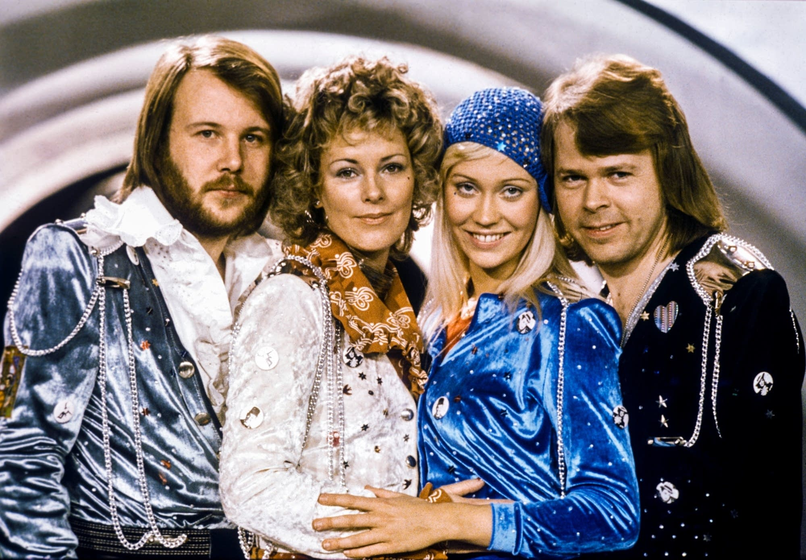
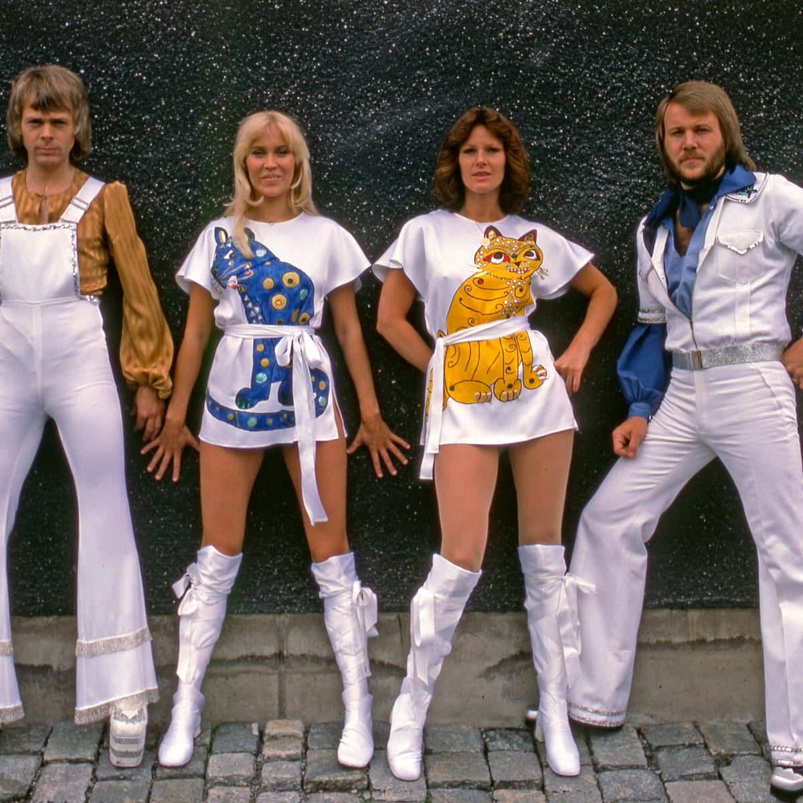

Get to Know ABBA

Who are ABBA?
ABBA is a Swedish pop group that was wildly popular in the 1970s and 1980s. While the band disbanded in 1982, their legacy lives on through their music! Check out the tabs above to learn more about each of the members, the group's journey as a whole, and their greatest hits!
